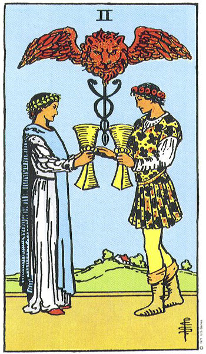

Capricornio
El Diez de Copas es represente el compromiso. Cuando nos comprometemos, nos sentimos en armonía con el universo.
Es el momento de encontrar paz con la familia y amigos, especialmente si tienes problemas que resolver. Toma la iniciativa. Llama, planifica una reunión. Piensa bien lo que vas a decir. Debes tratar de fomentar la paz, no crear mas discusiones. Quieres armonía. Este cambio te ayudará a progresar en el futuro.
En el amor, si tienes pareja, es momento de hablar sobre tus sentimientos, especialmente si no son esperados.
No huyas de los compromisos. Buena suerte.
Ver otro signo
Volver al inicio
Habla con Amos